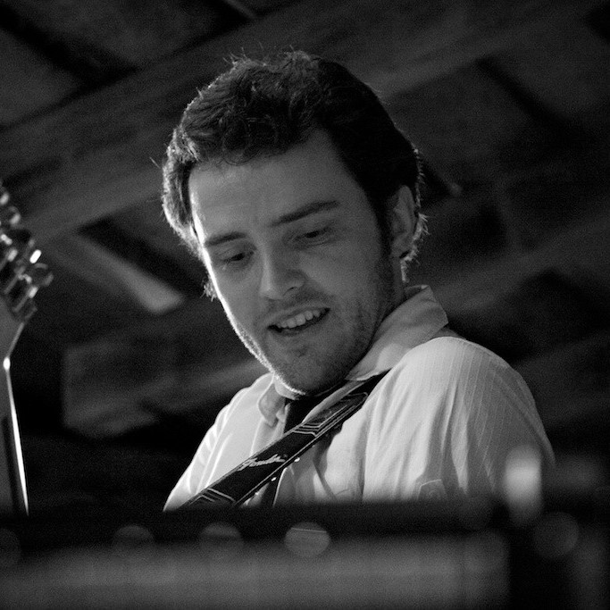
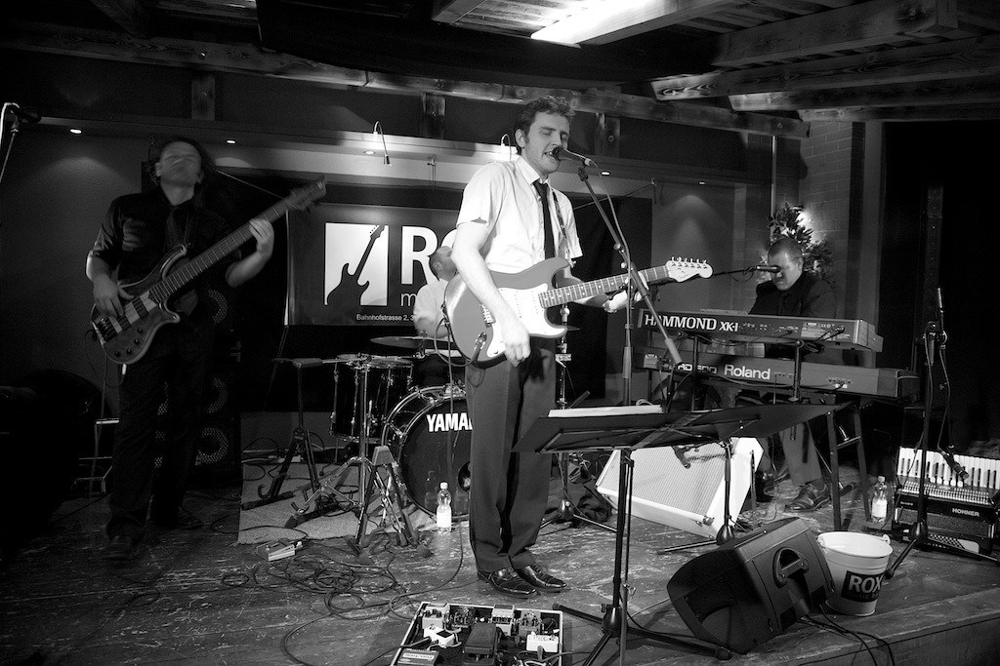

Die Band
Drei Köpfe, ein Blues
Bruni
Reti
Reinhören
Musik
Black Cat Bone
Cover von Albert Collins, Johnny Copeland und Robert Cray.
Geri Gagarin
Cover von Züri West.
Mehr Musik folgt …
Am besten live hören – wir freuen uns auf deine Anfrage.
Seit 2002
Geschichte
-
2002
OliMeetsDänel
Angefangen hat die Geschichte mit Oli und Dänel, die die Band OliMeetsDänel gegründet haben. Schon nach kurzer Zeit suchten sie einen Drummer und holten Reti mit ins Boot. Als sie dann noch einen Bassisten wollten, kam Bruni hinzu. Zu viert spielten sie eine lange Zeit, bis per Zufall noch Pädl bei einem Gig dazugestossen und auch geblieben ist.
-
2018
MeetatHome
Nachdem Dänel verliebt nach Österreich ausgewandert war, waren es nur noch vier. Daraus entstand MeetatHome. Aus fünf wurden vier.
-
2022
Oneless
Mittlerweile sind nur noch drei übrig, da es Oli aufgrund des Jobs nach Amerika verschlagen hat. Aus dieser Geschichte entstand 2022 der Name Oneless – eine weniger.
Live
Auftritte
2023
- Mittsommerfestival, Simmenfälle
2020
- Privat: Geburtstagsparty von Allmen
- Bellevue-Bar, Axalp bei Brienz
- Tschuggi Open, Hasliberg
- Hotel Brienz «Fisch’n Blues»
2019
- Skirennen Hasliberg Reuti
- GHELMA Fiirabe-Bier, Interlaken
- 150 Jahr «geili Sieche Bödeli»
- Lions Club Oberhasli, Hotel Brienz
Frühere Auftritte 2014–2018
2018
- Skirennen Hasliberg Reuti
- 2 Wochen Marti-Kreuzfahrt durch Europa
2017
- Telemark Event, Schilthorn
- Ghelma-Apéro, Interlaken
- Brienzersee Rockfestival
- Badi-Fest Meiringen
2015
- Eröffnung Lagerhalle Ghelma, Interlaken
- Wetterhorn, Hasliberg
2014
- ROX Bar, Spiez
- Sherlock Lounge, Meiringen
- Eröffnung BBO, Meiringen
- Brasserie, Interlaken
- Alpencamping, Meiringen
- Brüggli-Bar, Thun
Impressionen
Galerie
Buche uns jetzt
Für Konzerte, Feste und private Anlässe – melde dich bei uns.
- Bruno Kohler
- 079 340 86 74
- info@eineweniger.ch